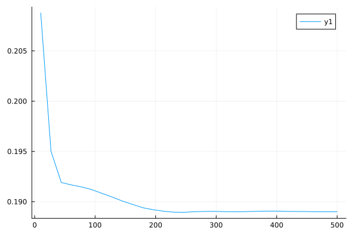
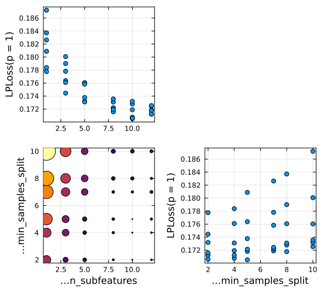
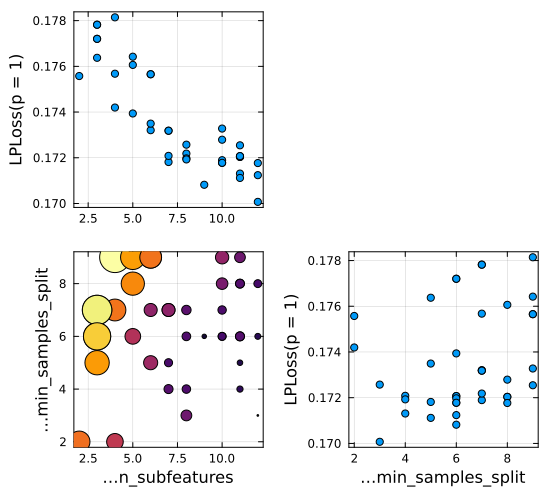

Lesson 3. Model Tuning
Notebook supporting the video series "Using MLJ".
To run the code in this tutorial in a live Julia session, first follow the instructions given here.
Part I. Learning Curves
using MLJ, Plots
RandomForestRegressor = @load RandomForestRegressor pkg=DecisionTree
X, price = @load_reduced_ames;
schema(X)┌──────────────┬───────────────────┬──────────────────────────────────┐
│ names │ scitypes │ types │
├──────────────┼───────────────────┼──────────────────────────────────┤
│ OverallQual │ OrderedFactor{10} │ CategoricalValue{Int64, UInt32} │
│ GrLivArea │ Continuous │ Float64 │
│ Neighborhood │ Multiclass{25} │ CategoricalValue{String, UInt32} │
│ x1stFlrSF │ Continuous │ Float64 │
│ TotalBsmtSF │ Continuous │ Float64 │
│ BsmtFinSF1 │ Continuous │ Float64 │
│ LotArea │ Continuous │ Float64 │
│ GarageCars │ Count │ Int64 │
│ MSSubClass │ Multiclass{15} │ CategoricalValue{String, UInt32} │
│ GarageArea │ Continuous │ Float64 │
│ YearRemodAdd │ Count │ Int64 │
│ YearBuilt │ Count │ Int64 │
└──────────────┴───────────────────┴──────────────────────────────────┘
y = price/100_000; # price in multiples of $100,000
first(y, 5)5-element Vector{Float64}:
1.38
3.699
1.8
2.075
1.47Define a model and a "dummy" model for baseline comparison:
model = RandomForestRegressor(
rng=123,
n_subfeatures=1,
)
pipe = ContinuousEncoder() |> model
baseline = ContinuousEncoder() |> ConstantRegressor();Get a performance baseline:
options = (; resampling=CV(nfolds=3), measure = mae, acceleration=CPUThreads())
e0 = evaluate(pipe, X, y; options...)
ebase = evaluate(baseline, X, y; options...)PerformanceEvaluation object with these fields:
model, tag, measure, operation,
measurement, uncertainty_radius_95, per_fold, per_observation,
fitted_params_per_fold, report_per_fold,
train_test_rows, resampling, repeats
Tag: ProbabilisticPipeline-144
Extract:
┌──────────┬──────────────┬─────────────┐
│ measure │ operation │ measurement │
├──────────┼──────────────┼─────────────┤
│ LPLoss( │ predict_mean │ 0.568 │
│ p = 1) │ │ │
└──────────┴──────────────┴─────────────┘
┌──────────────────────┬─────────┐
│ per_fold │ 1.96*SE │
├──────────────────────┼─────────┤
│ [0.544, 0.57, 0.592] │ 0.0332 │
└──────────────────────┴─────────┘
Inspect hyper-parameters:
pipeDeterministicPipeline(
continuous_encoder = ContinuousEncoder(
drop_last = false,
one_hot_ordered_factors = false),
random_forest_regressor = RandomForestRegressor(
max_depth = -1,
min_samples_leaf = 1,
min_samples_split = 2,
min_purity_increase = 0.0,
n_subfeatures = 1,
n_trees = 100,
sampling_fraction = 0.7,
feature_importance = :impurity,
rng = 123),
cache = true)Define a 1D hyper-parameter range:
r = range(pipe, :(random_forest_regressor.n_trees), lower=10, upper=500)NumericRange(10 ≤ random_forest_regressor.n_trees ≤ 500; origin=255.0, unit=245.0)A learning_curve has the same arguments as evaluate except but with extra range option:
curve = learning_curve(
pipe, X, y;
range=r,
resampling=Holdout(fraction_train=0.8),
measure=mae,
)
plt = plot(curve.parameter_values, curve.measurements)
savefig("learning_curve.svg");[ Info: Training machine(DeterministicTunedModel(model = DeterministicPipeline(continuous_encoder = ContinuousEncoder(drop_last = false, …), …), …), …).
[ Info: Attempting to evaluate 30 models.
Evaluating over 30 metamodels: 0%[> ] ETA: N/A[KEvaluating over 30 metamodels: 7%[=> ] ETA: 0:00:01[KEvaluating over 30 metamodels: 10%[==> ] ETA: 0:00:01[KEvaluating over 30 metamodels: 13%[===> ] ETA: 0:00:01[KEvaluating over 30 metamodels: 17%[====> ] ETA: 0:00:01[KEvaluating over 30 metamodels: 20%[=====> ] ETA: 0:00:02[KEvaluating over 30 metamodels: 23%[=====> ] ETA: 0:00:03[KEvaluating over 30 metamodels: 27%[======> ] ETA: 0:00:04[KEvaluating over 30 metamodels: 30%[=======> ] ETA: 0:00:05[KEvaluating over 30 metamodels: 33%[========> ] ETA: 0:00:06[KEvaluating over 30 metamodels: 37%[=========> ] ETA: 0:00:07[KEvaluating over 30 metamodels: 40%[==========> ] ETA: 0:00:07[KEvaluating over 30 metamodels: 43%[==========> ] ETA: 0:00:08[KEvaluating over 30 metamodels: 47%[===========> ] ETA: 0:00:08[KEvaluating over 30 metamodels: 50%[============> ] ETA: 0:00:09[KEvaluating over 30 metamodels: 53%[=============> ] ETA: 0:00:09[KEvaluating over 30 metamodels: 57%[==============> ] ETA: 0:00:10[KEvaluating over 30 metamodels: 60%[===============> ] ETA: 0:00:10[KEvaluating over 30 metamodels: 63%[===============> ] ETA: 0:00:10[KEvaluating over 30 metamodels: 67%[================> ] ETA: 0:00:09[KEvaluating over 30 metamodels: 70%[=================> ] ETA: 0:00:09[KEvaluating over 30 metamodels: 73%[==================> ] ETA: 0:00:08[KEvaluating over 30 metamodels: 77%[===================> ] ETA: 0:00:08[KEvaluating over 30 metamodels: 80%[====================> ] ETA: 0:00:07[KEvaluating over 30 metamodels: 83%[====================> ] ETA: 0:00:06[KEvaluating over 30 metamodels: 87%[=====================> ] ETA: 0:00:05[KEvaluating over 30 metamodels: 90%[======================> ] ETA: 0:00:04[KEvaluating over 30 metamodels: 93%[=======================> ] ETA: 0:00:03[KEvaluating over 30 metamodels: 97%[========================>] ETA: 0:00:01[KEvaluating over 30 metamodels: 100%[=========================] Time: 0:00:45[K

Let's set n_trees to a a value that looks sufficient to get convergence:
pipe.random_forest_regressor.n_trees = 250;Part II. The TunedModel Wrapper
r1 = range(pipe, :(random_forest_regressor.n_subfeatures), lower=1, upper=12)
r2 = range(pipe, :(random_forest_regressor.min_samples_split), lower=2, upper=10)NumericRange(2 ≤ random_forest_regressor.min_samples_split ≤ 10; origin=6.0, unit=4.0)Here's how we wrap our pipeline model in grid search optimization of the parameters specified by the above ranges:
tuned_pipe = TunedModel(
pipe,
range=[r1, r2],
tuning=Grid(goal=40),
resampling=CV(nfolds=4),
measures=mae,
)DeterministicTunedModel(
model = DeterministicPipeline(
continuous_encoder = ContinuousEncoder(drop_last = false, …),
random_forest_regressor = RandomForestRegressor(max_depth = -1, …),
cache = true),
tuning = Grid(
goal = 40,
resolution = 10,
shuffle = true,
rng = Random.TaskLocalRNG()),
resampling = CV(
nfolds = 4,
shuffle = false,
rng = Random.TaskLocalRNG()),
measure = LPLoss(p = 1),
weights = nothing,
class_weights = nothing,
operation = nothing,
range = MLJBase.NumericRange{Int64, MLJBase.Bounded, Symbol}[NumericRange(1 ≤ random_forest_regressor.n_subfeatures ≤ 12; origin=6.5, unit=5.5), NumericRange(2 ≤ random_forest_regressor.min_samples_split ≤ 10; origin=6.0, unit=4.0)],
selection_heuristic = MLJTuning.NaiveSelection(nothing),
train_best = true,
repeats = 1,
n = nothing,
acceleration = CPU1{Nothing}(nothing),
acceleration_resampling = CPU1{Nothing}(nothing),
check_measure = true,
cache = true,
compact_history = true,
logger = nothing)mach = machine(tuned_pipe, X, y) |> fit!
plt = plot(mach)
savefig("tuned_model_grid.svg");[ Info: Training machine(DeterministicTunedModel(model = DeterministicPipeline(continuous_encoder = ContinuousEncoder(drop_last = false, …), …), …), …).
[ Info: Attempting to evaluate 36 models.
Evaluating over 36 metamodels: 0%[> ] ETA: N/A[KEvaluating over 36 metamodels: 3%[> ] ETA: 0:00:14[KEvaluating over 36 metamodels: 6%[=> ] ETA: 0:00:15[KEvaluating over 36 metamodels: 8%[==> ] ETA: 0:00:22[KEvaluating over 36 metamodels: 11%[==> ] ETA: 0:00:21[KEvaluating over 36 metamodels: 14%[===> ] ETA: 0:00:21[KEvaluating over 36 metamodels: 17%[====> ] ETA: 0:00:20[KEvaluating over 36 metamodels: 19%[====> ] ETA: 0:00:18[KEvaluating over 36 metamodels: 22%[=====> ] ETA: 0:00:18[KEvaluating over 36 metamodels: 25%[======> ] ETA: 0:00:18[KEvaluating over 36 metamodels: 28%[======> ] ETA: 0:00:17[KEvaluating over 36 metamodels: 31%[=======> ] ETA: 0:00:16[KEvaluating over 36 metamodels: 33%[========> ] ETA: 0:00:15[KEvaluating over 36 metamodels: 36%[=========> ] ETA: 0:00:15[KEvaluating over 36 metamodels: 39%[=========> ] ETA: 0:00:14[KEvaluating over 36 metamodels: 42%[==========> ] ETA: 0:00:14[KEvaluating over 36 metamodels: 44%[===========> ] ETA: 0:00:13[KEvaluating over 36 metamodels: 47%[===========> ] ETA: 0:00:12[KEvaluating over 36 metamodels: 50%[============> ] ETA: 0:00:12[KEvaluating over 36 metamodels: 53%[=============> ] ETA: 0:00:11[KEvaluating over 36 metamodels: 56%[=============> ] ETA: 0:00:10[KEvaluating over 36 metamodels: 58%[==============> ] ETA: 0:00:09[KEvaluating over 36 metamodels: 61%[===============> ] ETA: 0:00:09[KEvaluating over 36 metamodels: 64%[===============> ] ETA: 0:00:08[KEvaluating over 36 metamodels: 67%[================> ] ETA: 0:00:08[KEvaluating over 36 metamodels: 69%[=================> ] ETA: 0:00:07[KEvaluating over 36 metamodels: 72%[==================> ] ETA: 0:00:06[KEvaluating over 36 metamodels: 75%[==================> ] ETA: 0:00:06[KEvaluating over 36 metamodels: 78%[===================> ] ETA: 0:00:05[KEvaluating over 36 metamodels: 81%[====================> ] ETA: 0:00:04[KEvaluating over 36 metamodels: 83%[====================> ] ETA: 0:00:04[KEvaluating over 36 metamodels: 86%[=====================> ] ETA: 0:00:03[KEvaluating over 36 metamodels: 89%[======================> ] ETA: 0:00:02[KEvaluating over 36 metamodels: 92%[======================> ] ETA: 0:00:02[KEvaluating over 36 metamodels: 94%[=======================> ] ETA: 0:00:01[KEvaluating over 36 metamodels: 97%[========================>] ETA: 0:00:01[KEvaluating over 36 metamodels: 100%[=========================] Time: 0:00:21[K

keys(report(mach))(:best_model, :best_history_entry, :history, :best_report, :plotting)report(mach).best_modelDeterministicPipeline(
continuous_encoder = ContinuousEncoder(
drop_last = false,
one_hot_ordered_factors = false),
random_forest_regressor = RandomForestRegressor(
max_depth = -1,
min_samples_leaf = 1,
min_samples_split = 5,
min_purity_increase = 0.0,
n_subfeatures = 10,
n_trees = 250,
sampling_fraction = 0.7,
feature_importance = :impurity,
rng = 123),
cache = true)report(mach).best_history_entry.evaluationCompactPerformanceEvaluation object with these fields:
model, measure, operation,
measurement, per_fold, per_observation,
resampling, repeats
Tag:
Extract:
┌──────────┬───────────┬─────────────┐
│ measure │ operation │ measurement │
├──────────┼───────────┼─────────────┤
│ LPLoss( │ predict │ 0.171 │
│ p = 1) │ │ │
└──────────┴───────────┴─────────────┘
┌─────────────────────────────┬─────────┐
│ per_fold │ 1.96*SE │
├─────────────────────────────┼─────────┤
│ [0.174, 0.16, 0.156, 0.192] │ 0.0181 │
└─────────────────────────────┴─────────┘
Instead we can use a random search strategy:
tuned_pipe = TunedModel(
pipe,
range=[r1, r2],
tuning=RandomSearch(rng=123),
resampling=CV(nfolds=4),
measures=mae,
n=40,
)
mach = machine(tuned_pipe, X, y) |> fit!
plt = plot(mach)
savefig("tuned_model_random.svg");[ Info: Training machine(DeterministicTunedModel(model = DeterministicPipeline(continuous_encoder = ContinuousEncoder(drop_last = false, …), …), …), …).
[ Info: Attempting to evaluate 40 models.
Evaluating over 40 metamodels: 5%[=> ] ETA: 0:00:20[KEvaluating over 40 metamodels: 8%[=> ] ETA: 0:00:19[KEvaluating over 40 metamodels: 10%[==> ] ETA: 0:00:20[KEvaluating over 40 metamodels: 12%[===> ] ETA: 0:00:20[KEvaluating over 40 metamodels: 15%[===> ] ETA: 0:00:20[KEvaluating over 40 metamodels: 18%[====> ] ETA: 0:00:20[KEvaluating over 40 metamodels: 20%[=====> ] ETA: 0:00:20[KEvaluating over 40 metamodels: 22%[=====> ] ETA: 0:00:19[KEvaluating over 40 metamodels: 25%[======> ] ETA: 0:00:18[KEvaluating over 40 metamodels: 28%[======> ] ETA: 0:00:17[KEvaluating over 40 metamodels: 30%[=======> ] ETA: 0:00:17[KEvaluating over 40 metamodels: 32%[========> ] ETA: 0:00:16[KEvaluating over 40 metamodels: 35%[========> ] ETA: 0:00:16[KEvaluating over 40 metamodels: 38%[=========> ] ETA: 0:00:15[KEvaluating over 40 metamodels: 40%[==========> ] ETA: 0:00:15[KEvaluating over 40 metamodels: 42%[==========> ] ETA: 0:00:14[KEvaluating over 40 metamodels: 45%[===========> ] ETA: 0:00:14[KEvaluating over 40 metamodels: 48%[===========> ] ETA: 0:00:13[KEvaluating over 40 metamodels: 50%[============> ] ETA: 0:00:12[KEvaluating over 40 metamodels: 52%[=============> ] ETA: 0:00:12[KEvaluating over 40 metamodels: 55%[=============> ] ETA: 0:00:11[KEvaluating over 40 metamodels: 58%[==============> ] ETA: 0:00:10[KEvaluating over 40 metamodels: 60%[===============> ] ETA: 0:00:10[KEvaluating over 40 metamodels: 62%[===============> ] ETA: 0:00:09[KEvaluating over 40 metamodels: 65%[================> ] ETA: 0:00:09[KEvaluating over 40 metamodels: 68%[================> ] ETA: 0:00:08[KEvaluating over 40 metamodels: 70%[=================> ] ETA: 0:00:07[KEvaluating over 40 metamodels: 72%[==================> ] ETA: 0:00:07[KEvaluating over 40 metamodels: 75%[==================> ] ETA: 0:00:06[KEvaluating over 40 metamodels: 78%[===================> ] ETA: 0:00:05[KEvaluating over 40 metamodels: 80%[====================> ] ETA: 0:00:05[KEvaluating over 40 metamodels: 82%[====================> ] ETA: 0:00:04[KEvaluating over 40 metamodels: 85%[=====================> ] ETA: 0:00:04[KEvaluating over 40 metamodels: 88%[=====================> ] ETA: 0:00:03[KEvaluating over 40 metamodels: 90%[======================> ] ETA: 0:00:02[KEvaluating over 40 metamodels: 92%[=======================> ] ETA: 0:00:02[KEvaluating over 40 metamodels: 95%[=======================> ] ETA: 0:00:01[KEvaluating over 40 metamodels: 98%[========================>] ETA: 0:00:01[KEvaluating over 40 metamodels: 100%[=========================] Time: 0:00:24[K

In-sample predictions based on optimized parameters and retraining on all data:
predict(mach, X)[1:5]5-element Vector{Float64}:
1.3710151999999998
3.627463819999999
1.8085951933333335
1.9762690599999997
1.3529714200000003Evaluate the "self-tuning" pipeline:
e1 = evaluate(tuned_pipe, X, y; options...)PerformanceEvaluation object with these fields:
model, tag, measure, operation,
measurement, uncertainty_radius_95, per_fold, per_observation,
fitted_params_per_fold, report_per_fold,
train_test_rows, resampling, repeats
Tag: DeterministicTunedModel-340
Extract:
┌──────────┬───────────┬─────────────┐
│ measure │ operation │ measurement │
├──────────┼───────────┼─────────────┤
│ LPLoss( │ predict │ 0.176 │
│ p = 1) │ │ │
└──────────┴───────────┴─────────────┘
┌───────────────────────┬─────────┐
│ per_fold │ 1.96*SE │
├───────────────────────┼─────────┤
│ [0.166, 0.167, 0.195] │ 0.0225 │
└───────────────────────┴─────────┘
Comparing with the baseline computed earlier:
@show ebase e0 e1;ebase = PerformanceEvaluation("ProbabilisticPipeline-144", 0.568 ± 0.0332)
e0 = PerformanceEvaluation("DeterministicPipeline-854", 0.184 ± 0.0281)
e1 = PerformanceEvaluation("DeterministicTunedModel-340", 0.176 ± 0.0225)
Or, we can do this:
describe.([e0, e1]) |> pretty┌─────────────────────────────┬──────────────────────┐
│ tag │ LPLoss │
│ String │ Measurement{Float64} │
│ Textual │ Continuous │
├─────────────────────────────┼──────────────────────┤
│ DeterministicPipeline-854 │ 0.184±0.028 │
│ DeterministicTunedModel-340 │ 0.176±0.023 │
└─────────────────────────────┴──────────────────────┘
We can also use TunedModel to compare models of different types:
tuned_model = TunedModel(models=[pipe, baseline], resampling=CV(nfolds=4), measure=l1)
mach = machine(tuned_model, X, y) |> fit!
report(mach).best_modelDeterministicPipeline(
continuous_encoder = ContinuousEncoder(
drop_last = false,
one_hot_ordered_factors = false),
random_forest_regressor = RandomForestRegressor(
max_depth = -1,
min_samples_leaf = 1,
min_samples_split = 2,
min_purity_increase = 0.0,
n_subfeatures = 1,
n_trees = 250,
sampling_fraction = 0.7,
feature_importance = :impurity,
rng = 123),
cache = true)Here tuned_model will behave just like pipe, because this is the best performer.
This page was generated using Literate.jl.